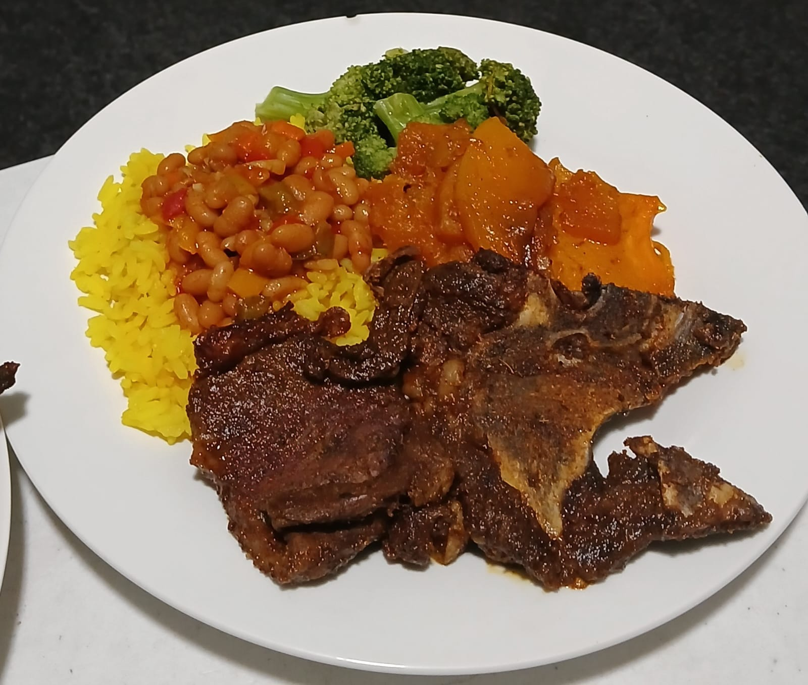

This meal offers a varied combination of carbohydrates, protein, fats and vegetables, making it a hearty and satisfying option.
It provides approximately 3,828 kJ (916 kcal), with 118 g of carbohydrates, 60 g of protein and 26 g of fat.
The meal also provides approximately 20 g of dietary fibre, supported by ingredients such as beans, vegetables and rice.
The inclusion of broccoli and pumpkin adds a variety of vitamins, minerals and plant-based nutrients to the plate,
while the protein-rich components contribute to the meal's overall protein content.
The combination of rice, beans, vegetables and protein provides a variety of textures and food components in one meal.
The range of ingredients also makes the plate visually colourful and diverse, supporting My Balanced Plate's focus
on helping customers better understand what makes up a complete meal.
Nutritional values are estimates based on the ingredients
and portions analysed and may vary depending on preparation methods, ingredients and serving sizes.


This meal is a high-protein and satisfying option, combining grilled chicken and scrambled eggs.
It provides approximately 2,301 kJ (550 kcal), with 54 g of protein, 33 g of fat and 7 g of carbohydrates.
Although the meal is relatively low in carbohydrates, it still provides valuable nutritional components.
Chicken and eggs contribute a substantial amount of protein, while the eggs and cheese provide fats and important nutrients such as vitamin B12, selenium and choline.
Its lower carbohydrate content highlights that meals can have different nutritional profiles while still providing important nutrients.
The cheese and sauce contribute additional flavour while also influencing the meal's overall fat and sodium content.
makes understanding the individual ingredients, portions and nutritional composition useful when considering the meal
as part of an overall eating pattern.
Nutrition values are estimates and may vary depending on ingredients,
preparation methods and portion sizes.


This meal provides a good combination of protein, healthy fats and carbohydrates, making it a satisfying option for a meal.
The cheese omelette provides a substantial source of protein, while the mushrooms add additional nutrients,
fibre and plant-based components.
The meal provides approximately 2,301 kJ,
with 10 g of carbohydrates, 20 g of protein and 22 g of fat. It also provides nutrients such as calcium,
iron and potassium, which contribute to a varied and balanced diet.
The combination of eggs, cheese and mushrooms provides a
range of textures and flavours while keeping the meal relatively simple to prepare.
As the meal contains a higher proportion of fat, particularly from the eggs and cheese, portion size and the choice of accompanying
foods can be considered when building a more balanced plate.
For a more complete meal,
it can be paired with vegetables, a fresh salad or a whole-grain carbohydrate source.
Nutritional values are estimates and may vary depending on the ingredients, preparation methods and serving portions.